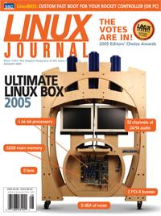

Shutdown Archive web server
Search:
Linux Journal
Issue #136/August 2005

Features
Ultimate Linux Box 2005
by Justin Thiessen, Matt Fulvio, Philip Pokorny, Trevor Sherard and Don Marti
This is our first Ultimate system to offer 52 channels of audio and Fibre Channel—just in case you need both.
Memory Ordering in Modern Microprocessors, Part I
by Paul E. McKenney
What's your processor doing while it waits for data to come in from slow main memory?
A User's Guide to ALSA
by Dave Phillips
Understand how the 2.6 kernel handles audio, and unleash the synthesizer and mixer inside your sound card.
Indepth
Editors' Choice Awards 2005
by Don Marti
We want our servers stable, our graphics non-jagged and our drivers GPL. Here's a shopping-cart load of the stuff that makes us happy.
The Prime Internet Eisenstein Search
by Bob Bruen and Phil Carmody
2, 3, 5, 7...pretty soon you're talking big numbers. Fire up your Linux box and join the quest.
Embedded
Porting LinuxBIOS to the AMD SC520
by Ron Minnich
LinuxBIOS doesn't just boot fast. Other advantages include a fallback copy and the ability to maintain BIOS code in C.
Toolbox
At the Forge
Sharing Calendars
by Reuven M. Lerner
Kernel Korner
Kernel Mode Linux for AMD64
by Toshiyuki Maeda
Cooking with Linux
The Ultimate in Small Linux
by Marcel Gagné
Paranoid Penguin
The Future of Linux Security
by Mick Bauer
Column
EOF
by Don Marti
Inside the Ultimate Linux Box 2005
Reviews
Ubuntu Linux 5.04
by Steve R. Hastings
Building the Perfect PC
by John Kacur
The Definitive Guide to Linux Network Programming
by Antonio Magnaghi
Departments
From the Editor
Letters
upFRONT
New Products
Archive Index
Shutdown Archive web server
Search:
Copyright © 1994 - 2018
Linux Journal
. All rights reserved.